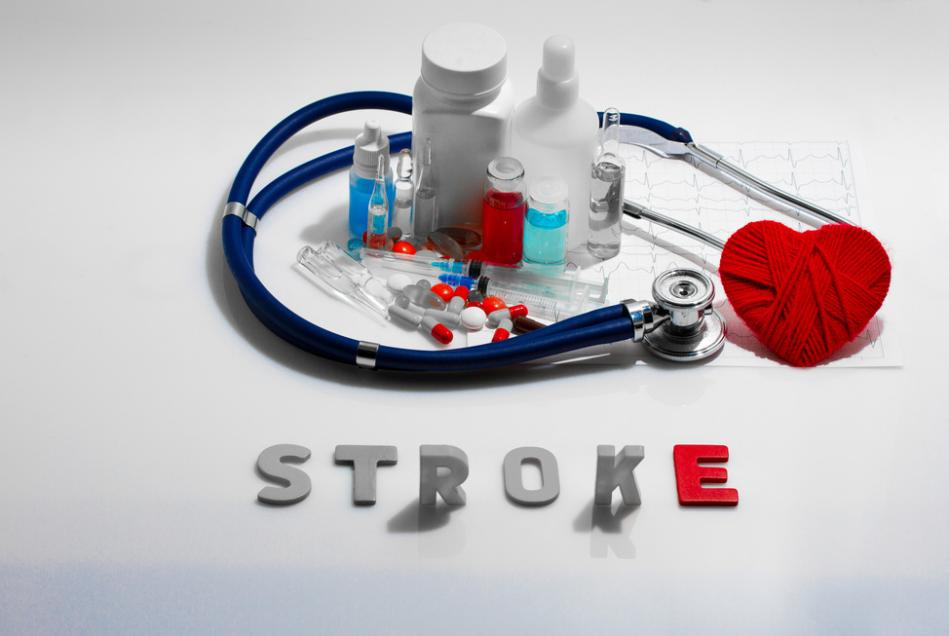
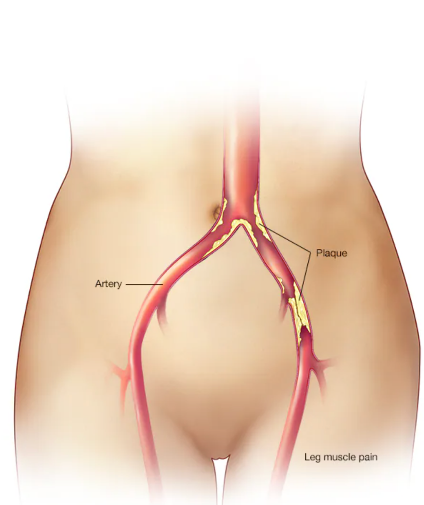
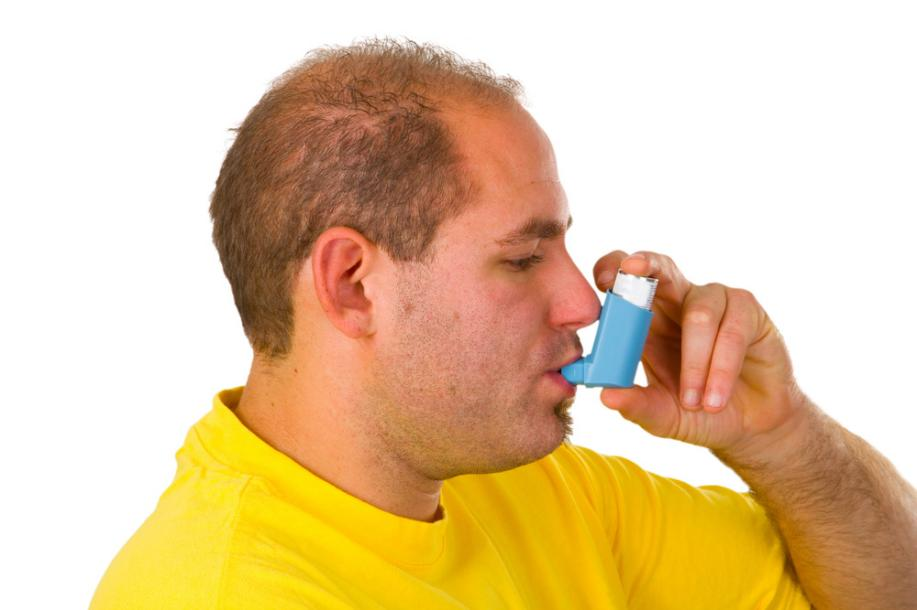
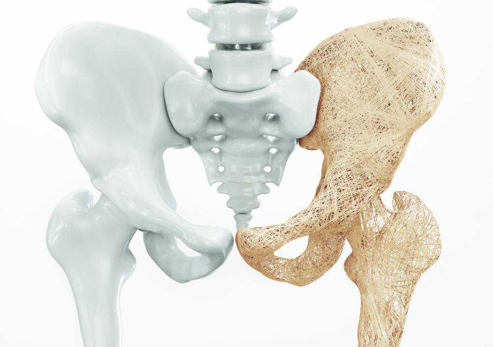

慢性病客户注意事项
本章节内容按"核心机制→症状要点→运动改善模式→安全注意"四段结构组织
跨疾病通用原则（所有疾病都适用的原则）
医学许可与筛查
● 所有慢性病客户开始运动前需获得医学许可
● 遵循ACE整合式Fitness训练模型的一般原则，根据疾病特点个性化调整
● 使用SOAP笔记记录客户进展（主观→客观→评估→计划）
运动处方通用框架
● 心肺：FITT-VP（频率、强度、时间、类型、进阶、变化）
● 肌力：频率、强度、时间、类型、进阶
● 强度监控：HRR%、VO₂R%、RPE、VT1/VT2
多学科协作
● 私人教练需与治疗医生、理疗师、注册营养师、心理健康专业人员保持沟通
● 多学科方法优于单一药物或单一干预
生活方式干预核心
● 所有慢性病共同建议：适度（适量营养+热量+运动频率/强度/时间）
● 减重、增加身体活动、健康饮食、戒烟是共性初始策略
一、心脑血管疾病
1.1 冠状动脉疾病（CAD）
核心机制
● 动脉粥样硬化：血管壁炎症→脂质斑块沉积→管腔狭窄→心肌供血不足
● 心梗（MI）触发：脆弱斑块破裂→血栓形成→动脉完全堵塞
症状要点
● 心绞痛（胸痛/胸闷，运动时加重）
● 呼吸困难
● 运动耐量下降
● 风险因素：家族史、高血压、血脂异常、糖尿病、吸烟、久坐、不良饮食
运动改善模式
表7-1
| 维度 | 低风险稳定客户处方 |
|---|---|
| 频率 | 心肺：≥3天/周（最好5天+）；肌力：2-3天/周 |
| 强度 | 心肺：40-80% HRR，RPE 12-13，≤VT1；肌力：RPE 11-13 |
| 时间 | 心肺：20-60分钟（含5-10分钟热身放松）；肌力：1-3组×10-15次，8-10个动作 |
| 类型 | 心肺：踏车、椭圆机、划船机、步行；肌力：小重量起始→逐渐过渡到器械 |
安全红线
● 必须获得医学许可后方可开始训练
● 终止运动的信号：心绞痛、呼吸困难、头晕、面色苍白、心率超目标
● 避免Valsalva动作（憋气）
● 低风险标准：住院过程无并发症、无缺血证据、功能能力>7METs、射血分数>50%
1.2 高血压

图7-1
核心机制
● 原发性（90-95%）：病因不明，遗传+环境交互
● 继发性（5-10%）：肾脏疾病等可识别原因
● 关键可变风险因素：压力、体脂过多、钠摄入、酒精、久坐、睡眠不足（OSA）
诊断标准（2017 ACC/AHA）
表7-2
| 分类 | 收缩压 | 舒张压 |
|---|---|---|
| 正常 | <120 | <80 |
| 偏高 | 120-129 | <80 |
| 1期 | 130-139 | 80-89 |
| 2期 | ≥140 | ≥90 |
运动改善模式
表7-3
| 维度 | 处方 |
|---|---|
| 频率 | 大多数/所有天数 |
| 强度 | 40-59% HRR，RPE 12-13，<VT1（可舒适交谈） |
| 时间 | ≥30分钟连续或累积（可分10分钟间歇） |
| 类型 | 有节奏大肌群：步行、慢跑、骑车、游泳 |
| 肌力 | 60-80% 1-RM，2-4组×8-12次，避免Valsalva |
关键数据
● 单次运动后血压可降低5-7 mmHg，持续24小时
● 每周≥150分钟运动量降压效果最大
● 生活方式改变（DASH饮食+运动+减重）效果可媲美药物
安全注意
● 服用β受体阻滞剂/钙通道阻滞剂者：用RPE监控强度，缓慢变换体位
● 服用利尿剂者：注意补液，防止脱水和运动后低血压
● 体位性低血压者：转介医疗专业人员评估用药
1.3 中风

图7-2
核心机制
● 缺血性（~80%）：脑血管被血栓/斑块堵塞
● 出血性（~20%）：脑血管破裂
警示信号（FAST原则）
● Face：面部突然下垂
● Arms：手臂突然无力
● Speech：说话困难/理解障碍
● Time：立即呼叫急救
运动改善模式
表7-4
| 维度 | 处方 |
|---|---|
| 频率 | 心肺：3-5天/周；肌力：2个非连续日 |
| 强度 | 心肺：轻-中-剧烈均可，40-70% HRR或RPE 11-14；肌力：50-70% 1-RM |
| 时间 | 心肺：20-60分钟，可分多轮；肌力：1-3组×8-15次 |
| 类型 | 心肺：踏车、卧式踏步机、跑步机步行；肌力：器械优先（安全性高） |
关键要点
● 运动可改善CVD风险因素（血压、血脂、胰岛素敏感性）
● 运动可改善平衡/协调/步态
● 即使中风后数年，运动仍能改善运动功能
● 运动指南应来自理疗师/职业治疗师
1.4 外周动脉疾病（PAD）

图7-3
核心机制
● 下肢动脉粥样硬化→病变远端血流减少→缺血性跛行（运动性下肢疼痛）
● 最常见病变部位：腹主动脉/髂骨、股骨、腘动脉、胫骨动脉
症状要点
● 跛行：行走一定距离后出现下肢钝痛/酸痛/痉挛
● 休息后缓解，再走再痛
● 重症者静息时也疼痛
运动改善模式（核心：间歇步行训练）
表7-5
| 维度 | 处方 |
|---|---|
| 频率 | 3-5天/周 |
| 强度 | 中等强度，以疼痛强度为准（非心率）；跛行疼痛量表3-4级（轻-中度） |
| 时间 | 30-45分钟（不含休息），逐步至60分钟；12周为一周期 |
| 类型 | 承重步行（间歇性）：走至中度疼痛→坐下休息→疼痛消失→继续 |
关键机制
● 步行产生缺血→刺激侧支循环形成+毛细血管/线粒体密度增加→氧气利用改善
● "高强度"在此语境指疼痛强度，非能量消耗
安全注意
● 出现CAD症状（胸痛等）→立即停止，需医学评估
● 足部护理至关重要（尤其合并糖尿病者）
● 穿合适的鞋袜
二、代谢紊乱
2.1 血脂异常
核心机制

图7-4
● 脂质代谢紊乱：总胆固醇↑、LDL↑、TG↑、HDL↓ → 动脉粥样硬化
● 关键脂蛋白：
● LDL（"坏"胆固醇）：促进动脉粥样硬化
● HDL（"好"胆固醇）：运输脂质至肝脏排泄，与CAD负相关
● 非HDL胆固醇：HDL之外的总胆固醇，识别致动脉粥样硬化颗粒，优于LDL
● TG：独立风险因素，慢性升高→内皮功能障碍
诊断标准
表7-6
| 指标 | 理想 | 边缘偏高 | 高 | 非常高 |
|---|---|---|---|---|
| LDL | <100 | 130-159 | 160-189 | ≥190 |
| 总胆固醇 | <200 | 200-239 | ≥240 | — |
| HDL | ≥60（高=保护性） | — | <40（低=风险） | — |
| TG | <150 | 150-199 | 200-499 | ≥500 |
运动改善模式
表7-7
| 维度 | 处方 |
|---|---|
| 频率 | 心肺：≥5天（最大化热量消耗）；肌力：2-3天 |
| 强度 | 心肺：40-75% HRR，低于/等于/高于VT1但<VT2；肌力：50-85% 1-RM（力量）或<50%（耐力） |
| 时间 | 心肺：30-60分钟（减重建议50-60分钟）；肌力：2-4组×8-12次（力量）或12-20次（耐力） |
| 类型 | 心肺：有节奏大肌群；肌力：器械/自由重量/体重 |
关键要点
● LDL：单纯运动对LDL改善不一致，需结合减重
● HDL：心肺适能提高→HDL普遍增高；减脂可使HDL增高更多
● TG：心肺训练最有效（TG可作燃料）；肌力训练无效
● 运动量阈值：每周250-300分钟，消耗~2000千卡→多数成年人可降低体重/体脂
● 餐后脂血症（PPL）：单次中等强度运动30-60分钟→TG降低持续12-36小时→建议至少隔天运动一次
2.2 糖尿病

图7-5
1型糖尿病
核心机制
● 自身免疫攻击胰岛β细胞→胰岛素绝对缺乏
● 需注射/泵入胰岛素调节血糖
● 血糖控制=饮食+运动+胰岛素三者的时间/量协调
运动注意
● 运动前减少胰岛素剂量
● 运动前/中摄取易吸收碳水化合物
● 运动中/后调整胰岛素泵输注量
● 胰岛素水平高→运动时/后低血糖风险
● 胰岛素水平低→高血糖+酮症风险
2型糖尿病（>90%患者）
核心机制
● 胰岛素抵抗（细胞对胰岛素不敏感）+ β细胞相对不足→高血糖
● 与久坐、热量过剩、肥胖（尤其内脏脂肪）高度相关
● 内脏脂肪→轻度炎症→胰岛素抵抗→糖尿病/代谢综合征
症状要点
● 多饮、多尿、多食、体重下降（典型但未必要全部出现）
● 长期并发症：心脏、血管、肾脏、眼睛、足部、神经、肌肉骨骼
运动改善模式
表7-8
| 维度 | 处方 |
|---|---|
| 频率 | 心肺：3-7天（避免连续2天不运动！）；肌力：≥2个非连续日（最好3天） |
| 强度 | 中等：40-59% HRR，<VT1；剧烈：60-89% HRR，VT1至<VT2 |
| 时间 | 1型：150分钟中等/75分钟剧烈；2型：150分钟中等 |
| 肌力 | 50-85% 1-RM，1-3组×8-10次（所有大肌群，8-10个动作，接近疲劳） |
关键要点
● 不可连续2天不运动：运动对胰岛素敏感性的影响24-48小时后消失
● 心肺+肌力结合→肌肉保持更高胰岛素敏感性→更好血糖控制
● 减重5-7%即可逆转胰岛素抵抗（与全身性炎症减少有关）
● 碳水对血糖影响最大→饭后1小时血糖最高，2小时后开始下降
● 碳水化合物类型重要：单糖→血糖快速峰值；复合碳水→释放更慢
安全注意
● 1型：运动前后监测血糖，调整胰岛素和碳水摄入
● 2型：注意低血糖症状（出汗、颤抖、头晕、意识模糊）
2.3 代谢综合征（MetS）
图7-6
核心机制
● 不是单一疾病，是一组增加心脏病/糖尿病/中风风险的代谢异常簇集
● 诊断标准（出现≥3项）：
1. 腰围↑：男≥102cm，女≥88cm
4. 血压≥130/85 mmHg（或药物治疗）
5. 空腹血糖≥100 mg/dL（或药物治疗）
运动改善模式
表7-9
| 维度 | 处方 |
|---|---|
| 频率 | 心肺：≥5天（最大化热量消耗）；肌力：≥2天（最好3天） |
| 强度 | 心肺：40-59% HRR，RPE 12-13，<VT1；肌力：50-85% 1-RM |
| 时间 | 心肺：30-60分钟（减重建议50-60分钟）；肌力：1-3组×8-10次 |
| 类型 | 心肺：有节奏大肌群；肌力：所有大肌群 |
关键要点
● 主要目标是减重（尤其减少内脏脂肪）
● 运动计划参照肥胖症指南设计
● 需同时评估CAD、高血压、血脂异常等共存风险因素
● 持续性运动和间歇性运动均可
三、肺部疾病
3.1 哮喘（运动诱发性支气管收缩 EIB）

图7-7
核心机制
● 呼吸道慢性炎症→对各种刺激因素过度反应→支气管平滑肌收缩+黏膜肿胀+黏液分泌↑→气道狭窄
● 运动诱发机制：大量干冷空气进入呼吸道→呼吸道水分丢失→支气管收缩物质释放
● 80%哮喘患者运动时/后发作（EIB）
症状要点
● 喘息、呼吸困难、胸闷、咳嗽（尤其夜间/清晨）
● EIB特征：中-剧烈强度运动后呼吸道暂时变窄
● 症状在运动后5-10分钟达峰，持续20-30分钟
● 部分人运动后2-12小时出现延迟反应
运动改善模式
表7-10
| 维度 | 处方 |
|---|---|
| 频率 | 心肺：3-5天/周；肌力：≥2天（最好3天） |
| 强度 | 心肺：起始<VT1（40-59% HRR），1个月后进阶至60-70%；RPE 12-13 |
| 时间 | 逐步至30-40分钟/次 |
| 类型 | 心肺：步行、跑步、骑车、无氯泳池游泳；肌力：50-85% 1-RM |
关键要点
● 10-15分钟热身（含剧烈/间歇运动）→诱导不应期→减弱EIB反应
● 约50% EIB者有2小时不应期（期间再次运动不发作或发作减弱）
● 运动调节→减少相同任务所需通气量→呼吸道干燥减少
● 哮喘最佳反应时间：上午中间至晚些时候
安全注意
● 随身携带急救药物（支气管扩张剂）
● 运动前预防性使用药物（遵医嘱）
● 运动前/中/后充分饮水
● 避免触发因素：极热/极冷、花粉高峰、空气污染
● 低温环境可佩戴口罩保持吸入空气温暖湿润
● 密切观察哮喘发作早期体征→症状加重→降低强度→终止课程
● 药物无效→启动急救系统
四、其他慢性病
4.1 癌症
核心机制
● 正常细胞DNA受损→突变→细胞不受控增殖
● 约30%癌症死亡与5大行为/饮食风险相关：BMI高、蔬果不足、久坐、吸烟、饮酒
● 癌症幸存者三阶段：治疗期→康复后生活→晚期/临终
运动改善模式
表7-11
| 维度 | 处方 |
|---|---|
| 频率 | 心肺：3-5天/周；肌力：2-3天/周 |
| 强度 | 心肺：中等（40-59% HRR，RPE 12-13），可进阶至剧烈；肌力：从<30% 1-RM起始，~5%递增 |
| 时间 | 心肺：75分钟剧烈或150分钟中等/周；肌力：≥1组×8-12次 |
| 类型 | 心肺：步行、骑车等大肌群长时间有节奏活动；肌力：自由重量+器械+承重功能任务 |
关键要点
● 运动可改善：焦虑/抑郁、疲劳、恶心、身体功能、生活质量
● 运动可维持肌肉量、肌肉力量/耐力、心肺适能、柔韧性
● 运动可降低心脏病、骨质疏松症、糖尿病风险
● 化疗/放疗患者可能出现贫血→降低运动强度
● 骨骼完整性受损→减少负重和高强度举重
安全注意
● 运动计划个体化：癌症类型、治疗方案、当前健康状态
● 建议转介肿瘤专科注册营养师
4.2 骨质疏松症

图7-8

图7-9
核心机制
● 骨量低+骨微结构破坏→骨骼脆弱→骨折风险↑
● 定义：BMD低于年轻成人平均值2.5个标准差以上
● 骨量减少：BMD低于平均值1.0-2.5个标准差
● 最常见骨折部位：髋关节、脊椎、前臂远端
● 90%+髋骨折由跌倒引起
风险因素
● 不可控：遗传、女性、白种人/亚洲人、绝经后
● 可控：生殖激素、钙/维生素D摄入、身体活动、吸烟、酒精
运动改善模式
表7-12
| 维度 | 处方 |
|---|---|
| 频率 | 心肺：4-5天/周；肌力：1-2天→进阶至2-3天 |
| 强度 | 心肺：中等（40-59% HRR）；肌力：调整至最后2次重复有挑战性，高强度者可受益 |
| 时间 | 心肺：20分钟→进阶至30-60分钟；肌力：1组×8-12次→2周后增至2组 |
| 类型 | 心肺：负重大肌群（步行、爬楼梯）；肌力：骨骼负荷力运动+平衡/步态/功能性站姿运动 |
关键要点
● 物理应力→骨骼微变形→刺激骨沉积→骨量/强度↑
● 经常运动→BMD↑、跌倒/骨折风险↓
安全红线
● 避免：脊柱过度前屈、扭转、压迫动作→增加脊椎骨折风险
● 推荐：躯干伸展+腹部稳定运动
● 避免：光滑表面、绊倒危险环境、快速震动动作
● 肌力训练+负重+冲击运动（跳跃）对刺激骨量最有效
● 强调平衡训练：躯干、髋部、下肢肌肉力量
4.3 关节炎
图7-10
骨关节炎（OA）
核心机制
● 关节软骨退化（过度使用/创伤/肥胖/年龄）→软骨磨损→骨端直接摩擦→疼痛+炎症
● 最常受累关节：颈椎/腰椎、髋、膝、手指末端关节
● 美国致残主要原因
症状要点
● 运动时疼痛（随时间/强度加重）
● 局部僵硬（尤其晨起/久坐后）
● 关节肿胀、灵活性下降
● 骨刺/软骨碎片脱落→炎症→进一步软骨损伤
类风湿关节炎（RA）
核心机制
● 自身免疫性疾病：滑膜组织炎症→关节软骨/骨骼磨损→关节变形
● 全身性疾病：除关节外，还影响皮肤、眼睛、肺、心脏、血管
● 分解代谢特性→肌肉减少（必须增强受累关节周围肌肉）
运动改善模式
表7-13
| 维度 | 处方 |
|---|---|
| 频率 | 心肺：3-5天/周；肌力：2-3天/周 |
| 强度 | 心肺：中等（40-59% HRR）至剧烈（≥60% HRR）；身体状况差者30-39% HRR |
| 时间 | ≥150分钟/周低-中强度，或75分钟剧烈，或组合 |
| 类型 | 心肺：低冲击有节奏大肌群（步行、骑车、游泳）；肌力：50-80% 1-RM，2-4组×8-12次，无痛ROM内运动 |
关键要点
● 运动+减重是控制OA最佳方法（尤其超重/肥胖者）
● 运动可改善：心肺适能、肌力/耐力、关节灵活性、疲劳、日常生活功能
● RA：等长运动优先，避免关节负荷过大
● RA：低冲击、有限ROM、温水运动、发作期避免运动可能有益
安全注意
● OA：下肢关节炎不建议跑步等高冲击运动
● RA：根据功能限制和基础心肺适能调整计划
● 所有动作在无痛范围内进行
表7-14
| 各疾病关键记忆点总结 |
|---|
表7-15
| 疾病/状况 | 关键记忆点 |
|---|---|
| 冠状动脉疾病（CAD） | 避免Valsalva动作（憋气用力） |
| 高血压 | 记住三个阈值：120（正常上限）、130（1期起点）、140（2期起点）；生活方式改变可避免药物 |
| 中风 | 无特殊上下肢区分限制，重点在功能恢复（平衡/协调/步态） |
| 外周动脉疾病（PAD） | 以疼痛强度为准（非运动强度）——走至中等疼痛（跛行量表3-4级）→休息→继续 |
| 糖尿病 | 运动前减少胰岛素剂量；不可连续2天不运动（胰岛素敏感性24-48h后消失）；运动中注意低血糖症状 |
| 代谢综合征 | 诊断标准：出现≥3项（腰围↑、TG≥150、HDL↓、血压≥130/85、空腹血糖≥100） |
| 哮喘 | 最佳运动时间：上午中间至晚些时候；保持吸入空气温暖湿润；随身携带急救药物 |
| 骨质疏松症 | 肌力训练+负重+冲击运动（跳跃）；高强度会受益 |
| 骨关节炎 | 避免疼痛范围外运动；避免高冲击和扭转动作 |
各个生命阶段的运动注意事项
第 8章
判断题
判断以下说法是否正确，点击展开参考答案。
查看答案
答案：正确。原文明确指出所有慢性病客户开始运动前需获得医学许可，这是跨疾病通用原则的首要要求。
查看答案
答案：错误。原文指出原发性高血压占90-95%，病因不明，为遗传+环境交互所致；继发性仅占5-10%。
查看答案
答案：正确。原文明确报告单次运动后血压可降低5-7 mmHg，持续24小时；每周≥150分钟运动量降压效果最大。
查看答案
答案：错误。原文指出服用β受体阻滞剂/钙通道阻滞剂者应使用RPE监控强度，而非心率，并需缓慢变换体位。
查看答案
答案：正确。原文指出缺血性中风约占80%，出血性约占20%。
查看答案
答案：错误。FAST中A代表Arms（手臂突然无力），F代表Face（面部下垂），S代表Speech（说话困难），T代表Time（立即呼叫急救）。
查看答案
答案：正确。原文明确PAD的核心运动改善模式为间歇步行训练，通过步行产生缺血刺激侧支循环形成。
查看答案
答案：错误。原文指出单纯运动对LDL改善不一致，需结合减重才能有效降低LDL。
查看答案
答案：正确。原文指出心肺训练最有效（TG可作燃料），肌力训练对降低TG无效。
查看答案
答案：正确。原文报告餐后脂血症（PPL）单次中等强度运动30-60分钟后TG降低持续12-36小时，建议至少隔天运动一次。
查看答案
答案：错误。原文指出1型糖尿病患者运动前应减少胰岛素剂量，运动前/中摄取易吸收碳水化合物，以防低血糖。
查看答案
答案：正确。原文解释PAD间歇步行训练中'高强度'在此语境指疼痛强度，非能量消耗。
知识翻卡
共 12 张知识卡片，点击翻转查看答案
已翻转: 0/12慢性病客户安全运动清单
- 获取客户医生许可和运动限制说明
- 了解客户用药情况及其对运动的影响
- 根据疾病类型调整运动处方：
- 高血压：避免瓦尔萨尔瓦动作、头部低于心脏
- 糖尿病：监测血糖，预防低血糖，注意足部
- 哮喘：备急救吸入器，充分热身
- 心血管疾病：心率低于测试心率10-20次
- 关节炎：无痛范围内训练，低冲击
- 骨质疏松：避免脊柱屈曲和高冲击
- 运动前中后监测相关指标
- 教会客户识别危险信号并立即停止运动
- 调整训练环境（温度、湿度、海拔）
- 与客户医疗团队保持沟通
- 记录运动反应和不适症状